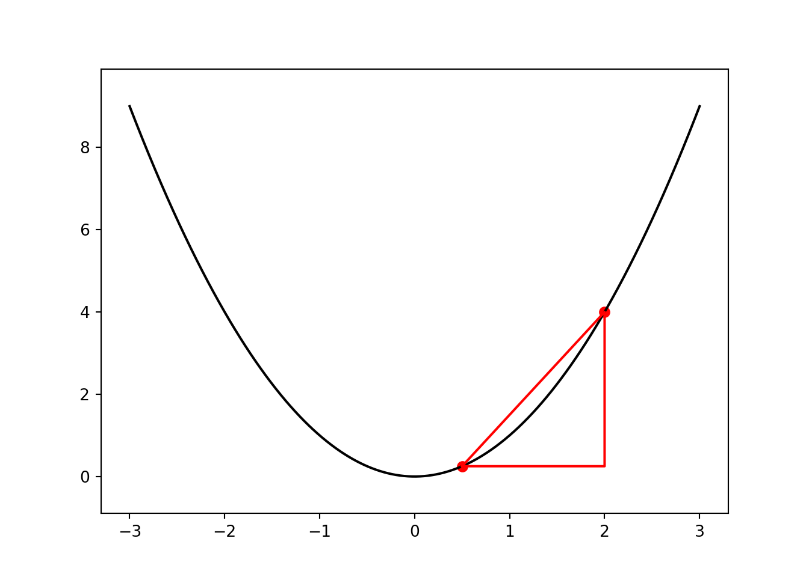

Da jeg først lærte om kalkulus på skolen var ikke klar over at det var tilfelle. Jeg tror ikke jeg er er den eneste som opplevde dette. Hvis du leser denne artikkelen er det mulig at du enda ikke vet at du lærer kalkulus.
Kort fortalt er kalkulus derivasjon og integrasjon, men for å gjennomføre disse operasjonene kreves funksjoner, grenseverdier og uendelige følger og rekker. Kalkulus er et av de viktigste verktøyene for å forstå og analysere funksjoner og hva funksjonene modellerer. Dette er fordi kalkulus forteller hvordan forholdet mellom momentan endring og total endring. Hvis vi klarer å beskrive hvordan noe endrer seg kan vi med kalkulus beskrive hvor det ender opp. Dette vil bli tydligere senere.
“Den deriverte” til en funksjon er endringshastigheten dens. Vi kan forstå dette geometrisk som hvor bratt tangenten til grafen er på et gitt punkt. Animasjonen under illustrere hvordan tangentene til funksjonen \[ f(x) = x^2 \]
For å finne en tangent trenger vi kun to ting: punktet der tangenten treffer kurven samt stigningstallet. Tangeringspunktet er lett å finne, vi kan nemlig bare evaluere funksjonen. Vi velger å kalle interessepunktet for \[ (x_1, y_1) \] Og \[ f(x_1) = y_1\] Dessverre er stigningstallet mye vanskeligere å finne, men vi kan prøve noe omtrentlig, og se hvor langt vi kommer. I steden for å lage en tangent, kan vi heller lage en korde: en linje som skjærer funksjonen på to steder. Med to punkter kan vi lett finne linjen som går gjennom. Gitt to punkter \[ (x_1, y_1)\\ (x_2, y_2) \] Kan vi vinne stigningstallet, \(a\), med denne enkle formlen: \[ a = \frac{y_2 - y_1}{x_2-x_1} = \frac{\Delta y}{\Delta x}\] ‘\(\Delta\)’ er den gammelgreske bokstaven for ‘d’ og i matematikken symboliserer differansen mellom de to punktene i henholdsvis y-retning og x-retning. Geometrisk kan dette tolkes som forholdet mellom høyden og bredden til trekanten som dannes av de to punktene:

Denne tilnærmingen kan være god eller dårlig avhengig av hvilke punkter vi velger, men merk at den blir bedre og bedre desto nærmere de er hverandre (Dette er ikke alltid tilfelle, noen rare funskjoner har ikke den egenskapen). Animasjonen under illustrerer dette:
Matematisk kan vi si at grenseverdien til korden når \(x_1\) og \(x_2\) går mot hverandre er tangenten. Vi kan uttrykke det slik: \[ \lim_{x_1 \to x_2} \frac{f(x_2) - f(x_1)}{x_2 - x_1} = a \]
Der \(a\) er stigningstallet til tangenten. Før vi går videre kan det være lurt å redefinere \(x_2\) til \(x + \Delta x\) og så lar vi \(x_1\) bare være \(x\). Da blir uttrykket slik:
\[ \lim_{\Delta x \to 0} \frac{f(x + \Delta x) - f(x)}{\Delta x} = f'(x) \]
Den deriverte er altså denne grenseverdien, og vi kaller den for \(f'(x)\). For å fullføre denne introduksjonen til derivasjon, kan vi gjennomføre utregninen med funksjonen vår \(f(x) = x^2\):
\[ \begin{aligned} \lim_{\Delta x \to 0} \frac{f(x + \Delta x) - f(x)}{\Delta x} &= \lim_{\Delta x \to 0} \frac{(x + \Delta x)^2 - x^2}{\Delta x}\\ &= \lim_{\Delta x \to 0} \frac{x^2 +2x\Delta x + (\Delta x)^2 - x^2}{\Delta x}\\ &= \lim_{\Delta x \to 0} \frac{2x\Delta x + (\Delta x)^2}{\Delta x}\\ &= \lim_{\Delta x \to 0} 2x + \Delta x\\ &= 2x \end{aligned} \]
Vi ser altså at den deriverte funksjoen til \(f(x)=x^2\) er den lineære funksjoen \(f'(x) = 2x\). Merk at den deriverte er en ny funksjon. Dette er fordi stigningstallet til \(f\) endrer seg ettersom \(x\) endrer seg. For akkurat denne funksjonen betyr det at den er dobbelt så bratt som x-verdien. Videre kan man tenke seg hvordan man kan derivere andre funksjoner, for eksempel \(f(x) = x^3\) og så videre.